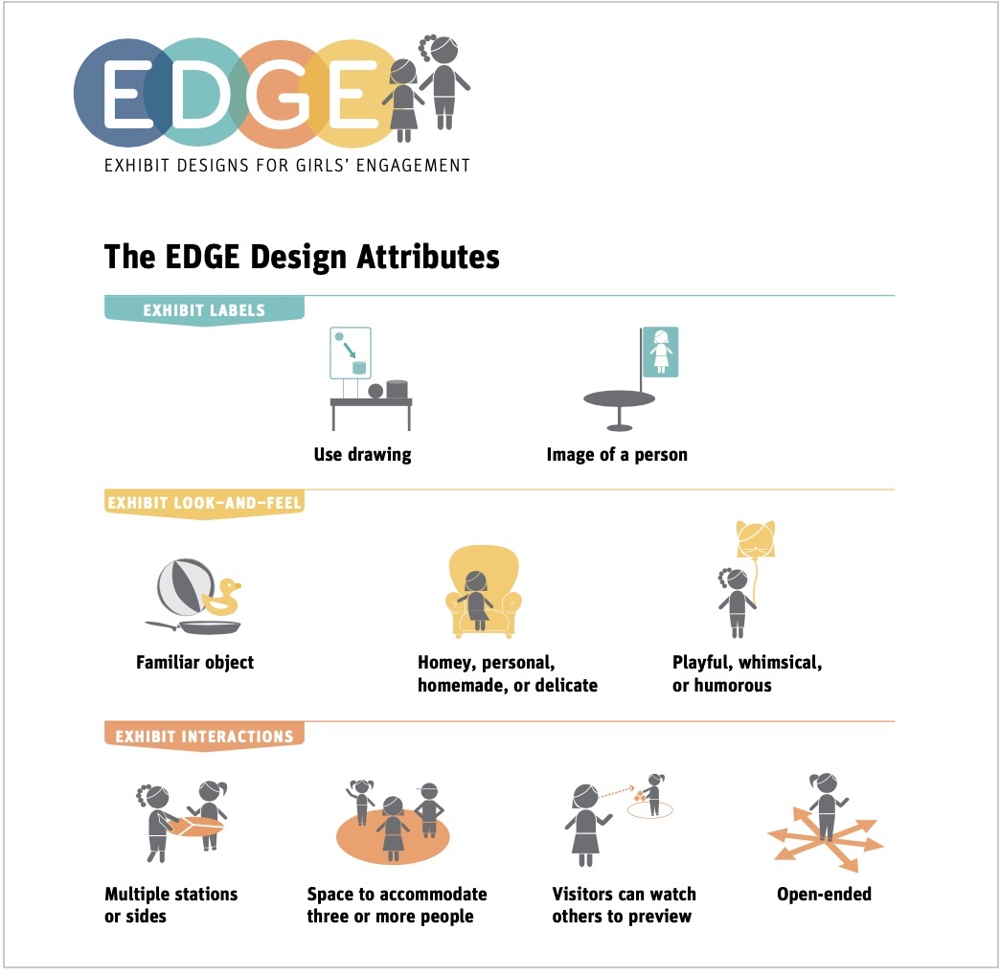
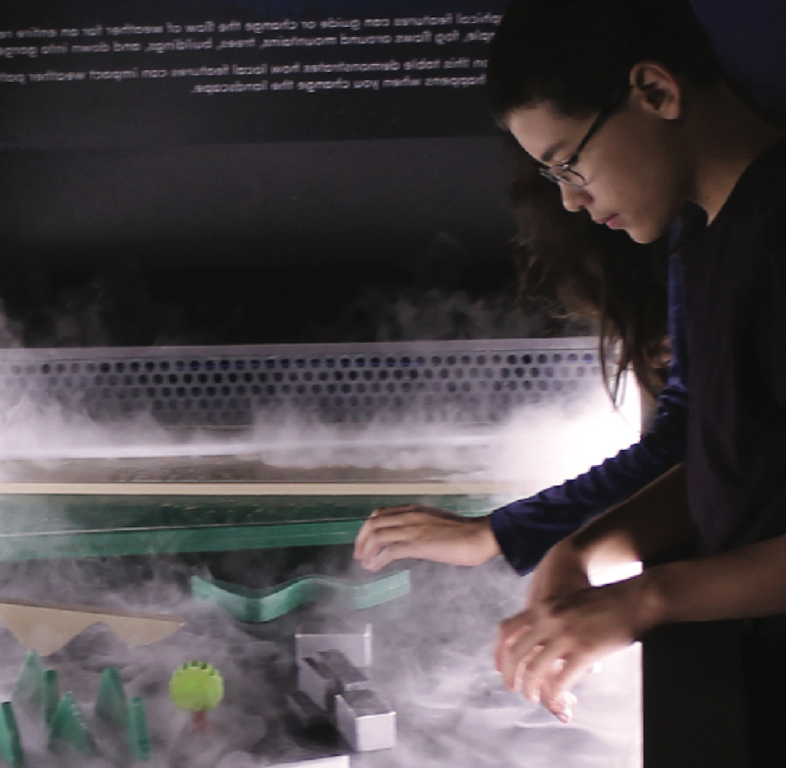
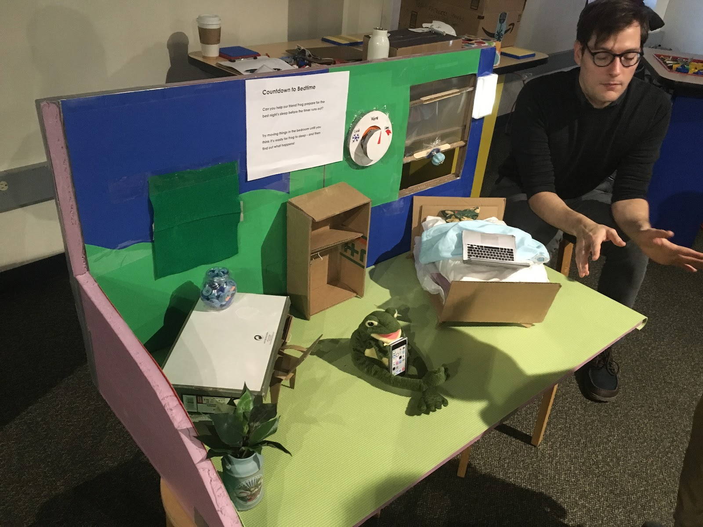
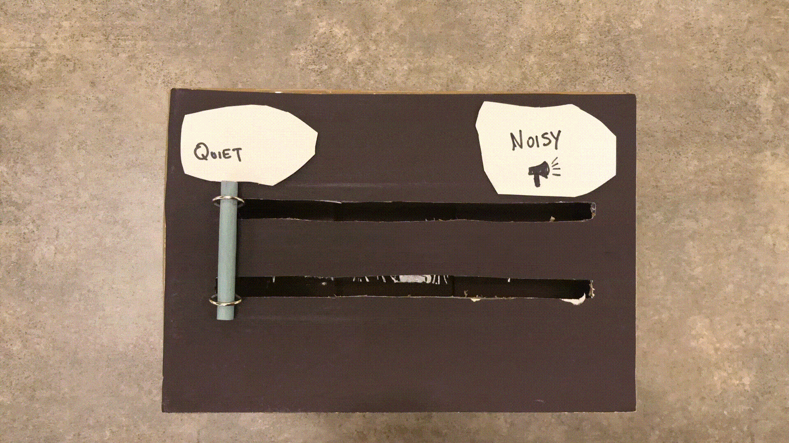
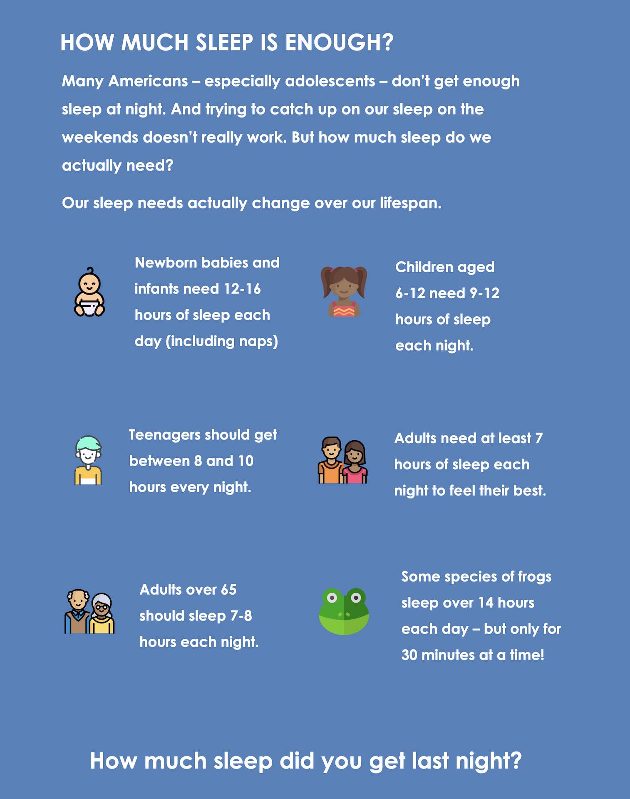
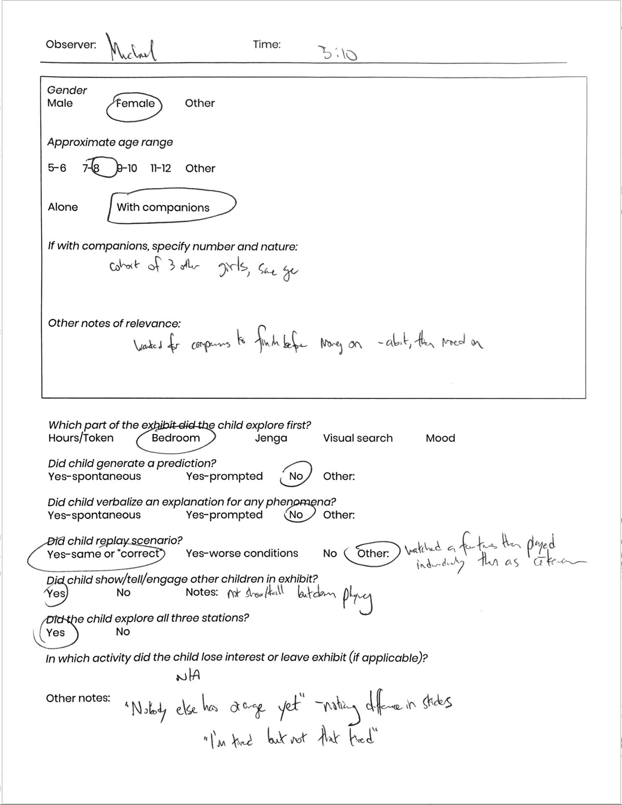
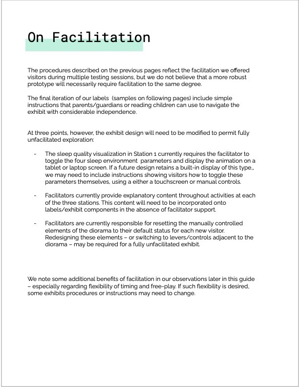
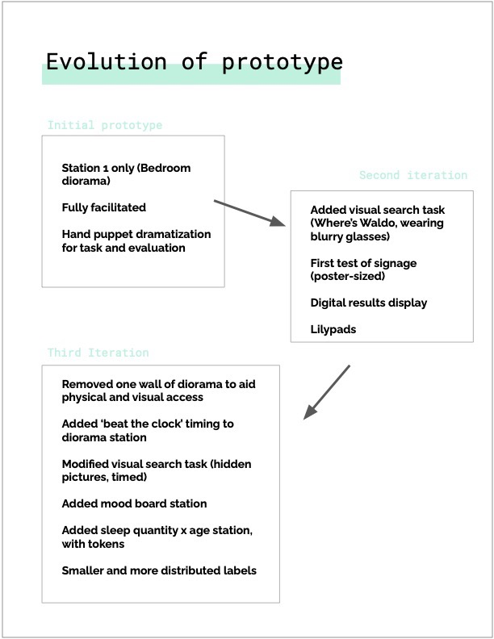
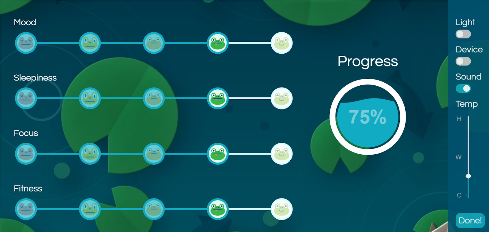

Psychology at the Sciencenter
Let's make learning about sleep less of a snooze
Sciencenter Museum, Ithaca, NYRole(s):
Observational research, expert interviews, physical prototyping, exhibit facilitation, writing
The Context
Client: Ithaca Sciencenter
Objective: Design, prototype, and evaluate an exhibit to teach children about psychology, health, and the brain.
The Sciencenter is a children’s museum operating in Ithaca, NY since 1983. The museum has only a small staff and few resources available for designing and evaluating new exhibits. The museum partnered with a local university to develop and test (low-fidelity) exhibit prototypes in the hopes of one day producing a traveling exhibit of its own.
Our task was to create an exhibit about sleep that would appeal to a wide age range and promote conversation and shared learning.
What makes for an engaging exhibit?
Expert interviews
Best design practices
Observation
|  |  |
|---|---|
Design guidelines for girls’ engagement1 |
Observing visitors at the Sciencenter |
Initial findings
-
importance of see-show-do with parent-child and sibling dyads
-
digital interactives less durable and less preferred
-
longer dwell-time when exhibits offered shelter/carved out space
-
faces, characters, and familiar objects help ensure girls’ participation
-
importance of challenging emotions (surprise, confusion, frustration)
Building and testing the first prototype
Putting the frog to bed
Our exhibit asked visitors to help put a friendly frog to sleep. Visitors could manipulate four settings in the room: temperature, light, sound, and use of electronic devices, and in the process learn about the importance of sleep hygiene.

Messy protoyping
Although this was a facilitated exhibit (we controlled the frog puppet), we wanted childrento be able to make adjustments to the diorama themselves. The controls for our first model were located outside the diorama in front of the exhibit.

Testing tactile elements
Testing the prototype with kids and parents at the museum
We set up shop at the Sciencenter on a weekday afternoon and invited visitors to interact with our prototypes.
-
children (especially younger ones) immersed in the frog world
-
physical controls popular but perhaps too distant/abstract
-
older children weren’t as interested as younger ones
-
Exhibit content may have been too basic
Modifying the Design, Testing again

Poster for a supplementary activity
Based on our initial observations, we made the following changes to the design before a second round of testing:
-
supplemental activities exploring other facets of sleep (sleep needs across the lifespan; the physical and mental effects of poor sleep)
-
new labels with prompts
-
timed-task for the main exhibit
-
digital display
We tested these new exhibits with children at the museum, and again at an after-school program.

Observation worksheet
Results and Takeaways
|  |  |
|---|
Pages from the final exhibit report
1. Tactile first
Our initial design featured “dummy” controls for the environmental factors included in the exhibit: an adjustable thermometer, a quiet-loud slider, and an on/off wheel for use of e-devices. The large size of the controls made it easy for children to manipulate them, and their placement (low and in front of the exhibit) meant they were often the first component visitors interacted with. This “touch-first” quality drew in visitors and afforded an initial interaction that wasn’t facilitated/mediated by our team, which seemed to help younger/shyer visitors engage. Older children were also curious about the construction of the mechanisms themselves. hile this procedure was ultimately changed in favor of more direct visitor interaction with the bedroom environment (manipulating items in the diorama itself), we recommend including versions of these controls – gear-turning, dial-sliding, or similar – in subsequent iterations of the exhibit, especially if they can be made fully functional rather than mere visualizations of settings.
2. Benefits and perils of gamification
Our observations revealed some critical tradeoffs resulting from the addition of a timing/gamified component. The challenge of working to beat the clock at both the diorama and visual search stations dramatically improved the exhibit’s appeal to older children (7+), increased dwell time and repeat play, encouraged onlookers, and fostered shared/team participation. These benefits lead us to suggest including a timed or competitive element in any future design.

Some visitors felt judged by the digital scorecard
Yet the untimed, less structured earlier exhibit format allowed visitors to explore the miniature bedroom at their leisure and engage in narrative play (e.g. reading the frog a bedtime story), which seemed to be popular with younger children. We also observed more self-talk and verbal reasoning from children when timed/gamified components were absent.